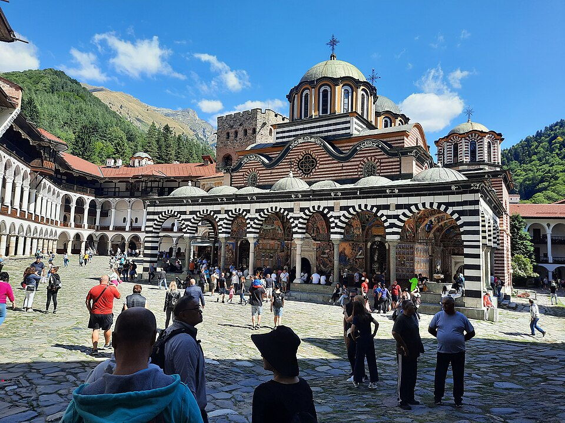
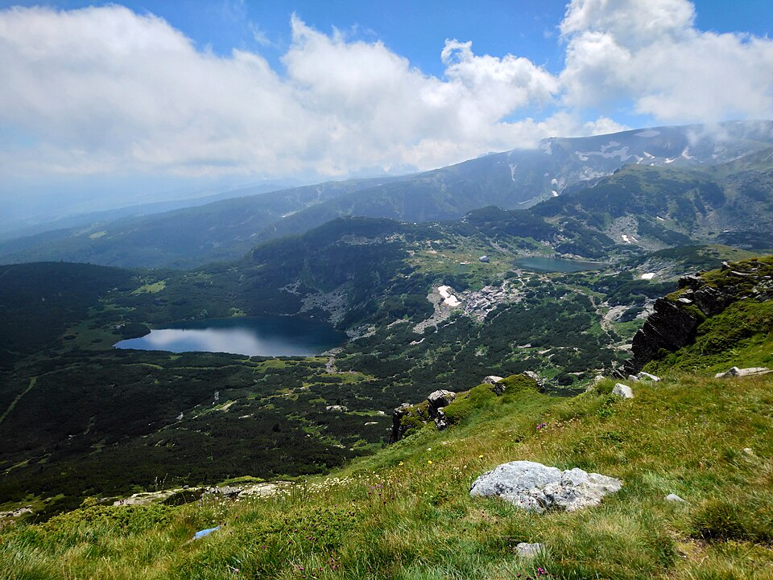
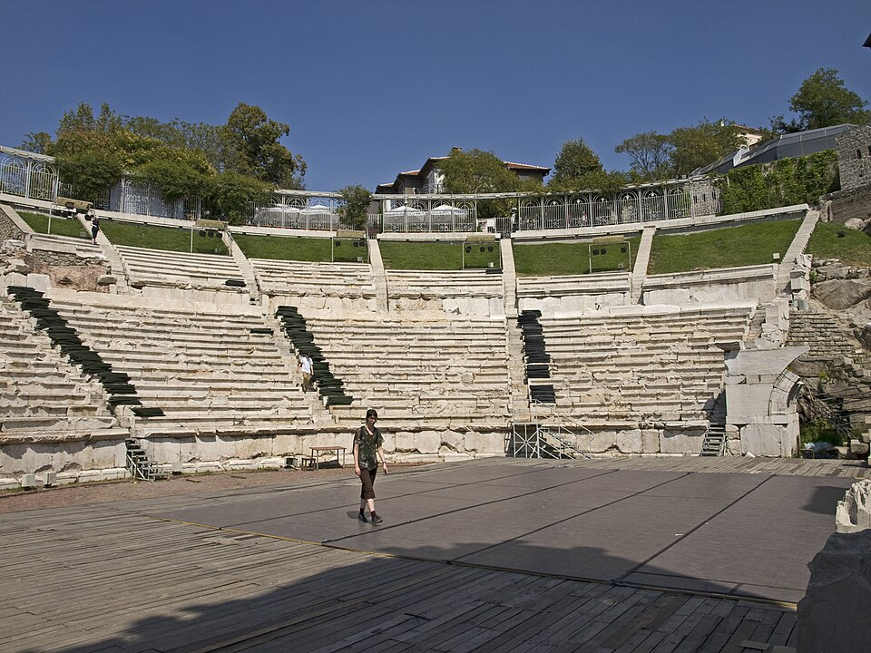
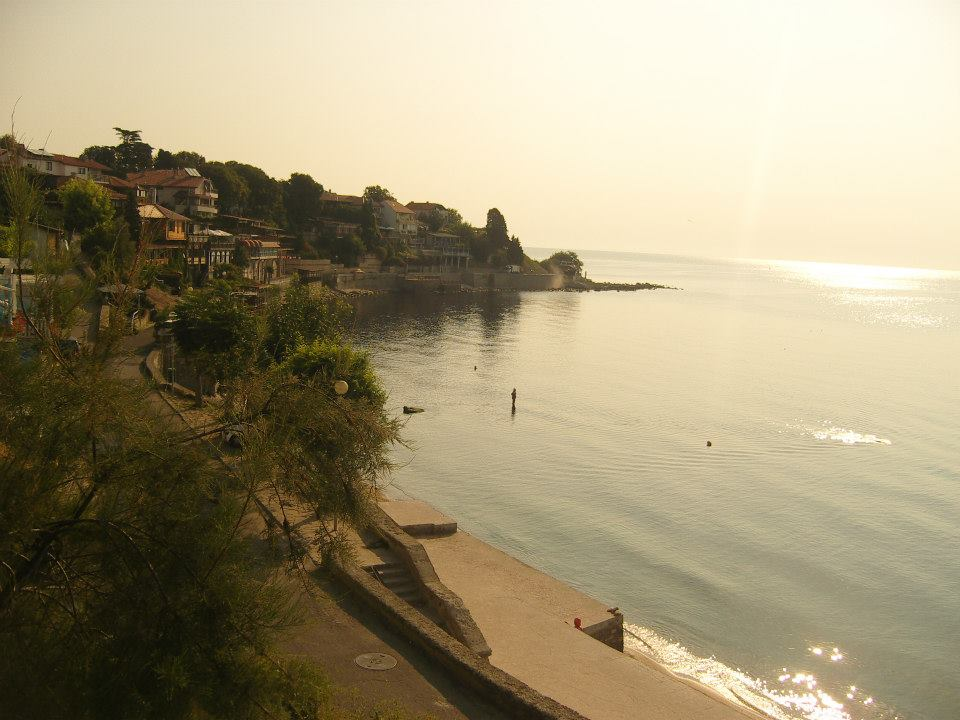

Bulgaria불가리아 България
발칸산맥과 흑해, 오래된 수도원과 로마 유적의 나라
- Capital
- 소피아 (София)
- Language
- 불가리아어
- Currency
- 유로 (EUR)

릴라 수도원Rila Monastery
릴라 7호수Seven Rila Lakes
플로브디프 로마 극장Roman Theatre, Plovdiv
네세버르 구시가지Old NessebarExplore Bulgaria
불가리아 더 알아보기
발칸산맥·릴라·피린산맥, 트라키아 평원, 흑해 해안이 한 나라 안에 공존한다. 소피아의 정교회 유산, 플로브디프의 로마 극장, 릴라 수도원의 벽화, 카잔러크의 장미 산업을 통해 역사·문화·경제를 연결해 소개할 수 있다.


Latest updates
불가리아 최근 뉴스
-
코소보, 헤이그 특별재판소 권한 축소 법 개정 추진…EU·영국 우려, 불가리아는 S&P 전망 안정적 상향
발칸인사이트에 따르면 EU와 영국은 코소보 의원들에게 헤이그 특별재판소 권한을 줄이는 개정법을 국제 파트너와 협의 없이 통과시키지 말라고 경고했습니다.
-
불가리아 트라키아 고속도로 사고 수사 계속·총리 프랑스 안보 구상 조건부 지지, 북마케도니아는 알타은행 논란
BTA에 따르면 수사당국은 안개 속 트라키아 고속도로 연쇄 추돌 수사를 위해 통행료 카메라 영상을 요청했고, 부상자 16명은 안정적인 상태입니다.
원문 BTA – 헤드라인 목록(11월 13일) 외 2건
-
불가리아 트라키아 사고 후속: 치료비 국가 부담·법의학 검사 51건, 2027 예산안 논의
BTA에 따르면 사회장관은 12일 트라키아 고속도로 사고 부상자 전원의 치료비를 국가가 부담한다고 밝혔습니다.